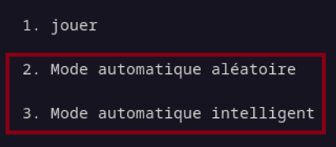

Il s'agit de modes permettant de faire jouer un robot à votre place.
Le mode automatique, en tant que joueur, ne vous sont pas très utiles.
Mais alors à quoi servent-ils ?
Déjà, vous pouvez comparer vos scores personnels avec ceux de l'ordinateur. Mais d'un point de vue plus théorique, il s'agit de modes permettant de faire des simulations de jeu.
Deux modes automatiques vous sont propausés :
- Le premier est un mode qui agit de manière totalement aléatoire et iréfléchi. (Il est donc très lent pour terminer la partie.)
- Le deuxième est un mode dit "intelligent". Il se souvient de toutes les cartes qu'il a découvert et agit en conséquence.
A la fin de sa partie, comme il était évoqué précédament, vous devez compréter le pseudo "Auto_Random_Mode" ou "Auto_Smart_Mode" (par exemple en ajouttant un chiffre). Et de même que pour le mode de base, les trois meilleurs scores seront affichés.
Et voilà, vous savez désormais qu'est ce que les modes automatiques.
Pour retourner au sommaire...
Sommaire des étapes